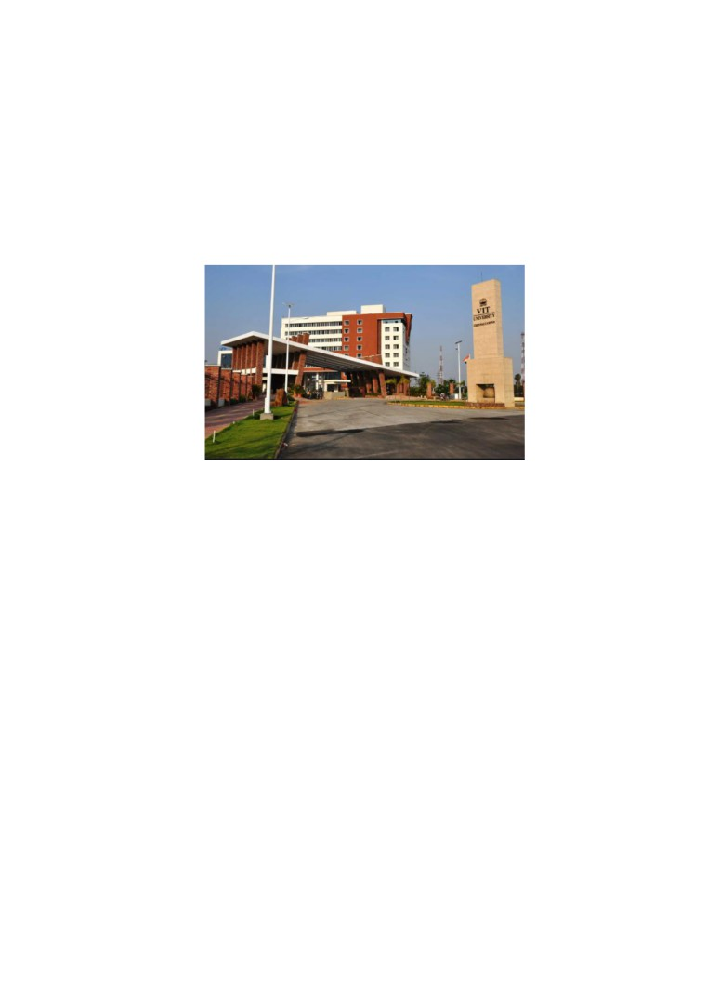

VELLORE INSTITUTE OF TECHNOLOGY,
CHENNAI,
VIT - A place to learn; A chance to grow
ABOUT VIT
Founded in 1984, VIT has made a mark in the field of higher education in India
imparting quality education in a multi-cultural ambience, intertwined with extensive
application-oriented research. VIT was established with the aim to provide quality
higher education on par with International Standards. It persistently seeks and
adopts innovative methods to improve the quality of higher education on a
consistent basis. VIT was established by well-known educationalist and former
parliamentarian, Dr. G. Viswanathan, Founder and Chancellor, a visionary who
transformed VIT into a center of excellence in higher technical education. Govt. of
India recognized VIT as an Institution of Eminence (IoE). ARIIA, Govt. of India
recognized VIT as an No. 1 Private University for Innovation. MHRD, Govt of India
ranked VIT as No.18 among the Engineering Institutions (NIRF-2019 ranking). VIT
Chennai is ably spearheaded by Dr. Sekar Viswanathan, Vice President,
Dr. Sandhya Pentareddy, Executive Director, Dr. Anand A. Samuel, Vice Chancellor
and Dr. V. S. Kanchana Bhaaskaran, Pro-Vice Chancellor. They share in the mission
to make VIT a global center towards academic and research excellence.
The focus is to:
• To maximize the Industrial connectivity
• To create Centers of Excellence in contemporary areas of research.

• To enrich technological and managerial human capital nurtured in a
multicultural ambience.
• To provide a common platform for the agglomeration of ideas of personnel
from various walks of life for learning enrichment.
• To create opportunities and exploit the available resources to benefit
industry/society.
• To encourage participation in the national agenda of knowledge building.
• To foster international collaborations for mutual benefit in areas of research.
ABOUT SCHOOL
The School of Mechanical Engineering (SMEC) at VIT Chennai was established to
impart state-of-the art education, training and research in the field of Mechanical
Engineering. SMEC provides undergraduate program
(B.Tech) in Mechanical
Engineering and postgraduate program (M.Tech) in CAD/CAM and Mechatronics
Engineering and Ph.D. / M.S. (Research). The School has highly qualified faculty
members with good theoretical background and valuable industrial experience in
diverse fields like Thermal and Automotive Engineering, Design and Manufacturing,
Mechatronics and Material sciences. The school is headed by Dr. Sivakumar R,
Professor and Dean. The school has over 90% of teaching faculty with doctorates
giving high emphasis for research along with innovative teaching methods which
helps to involve students in research and project based learning in the school. The
research outcomes in the form of publications and patents are the testament to the
world class, global standard infrastructure and research laboratory facilities available
in the school. The outreach programs of the school include organizing Value Added
Programs and workshops for teachers, industry personnel and students for various
organizations in relevant areas periodically.